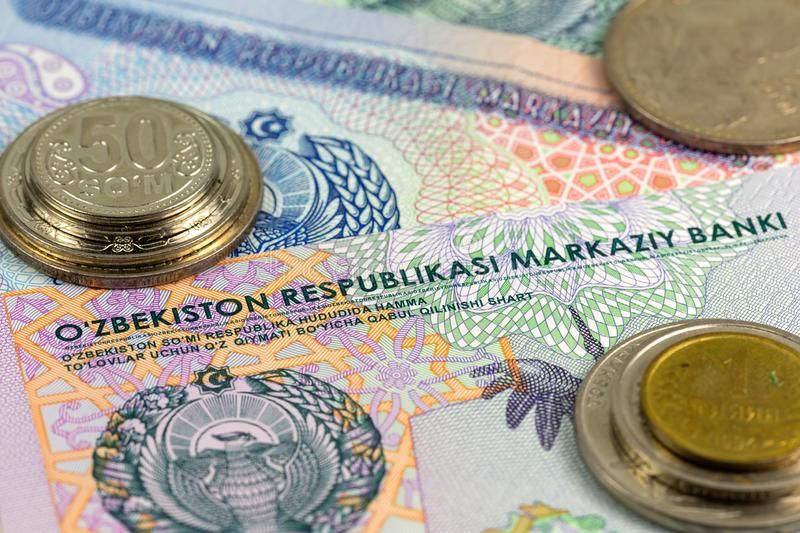
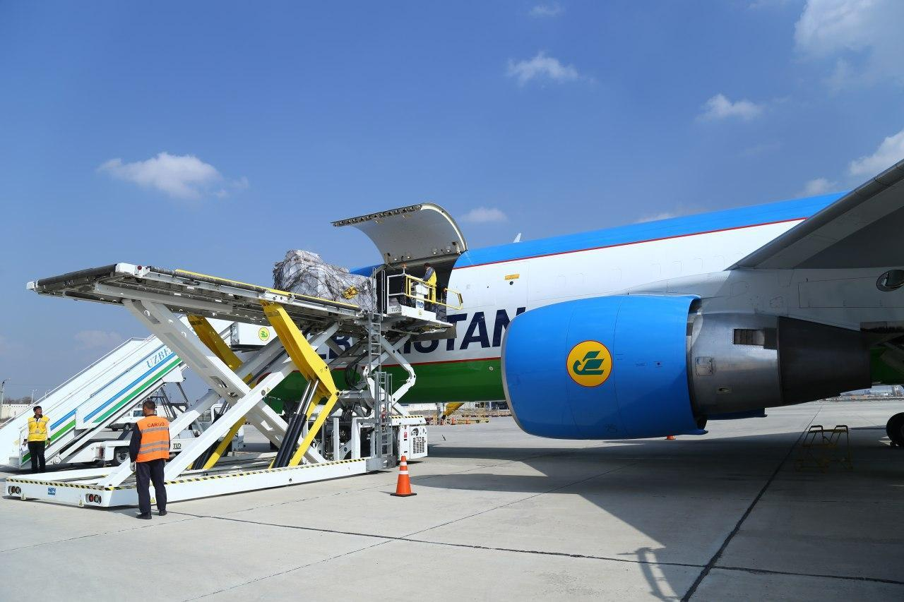
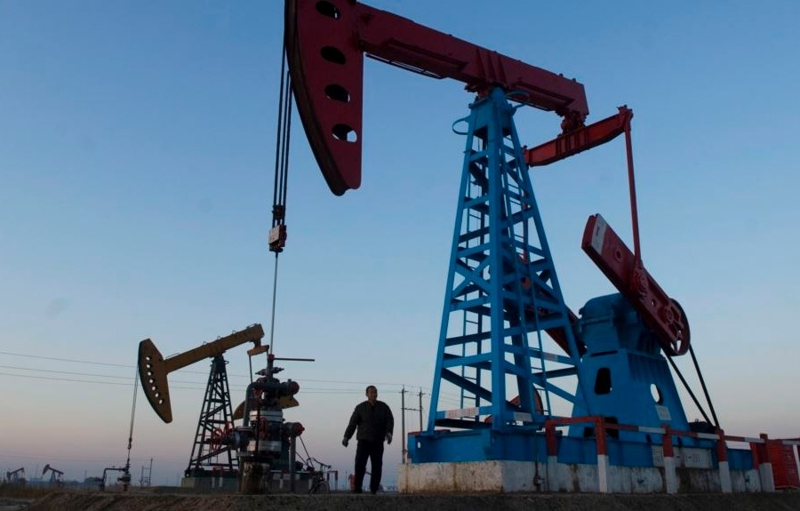
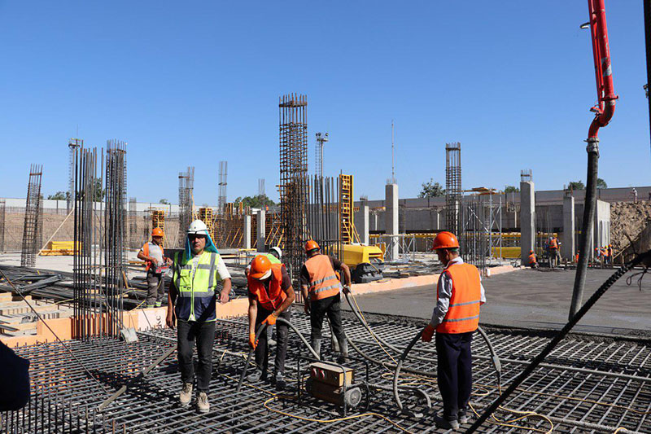
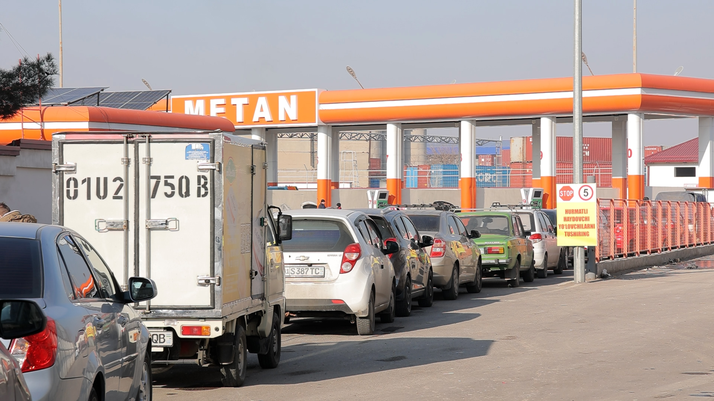
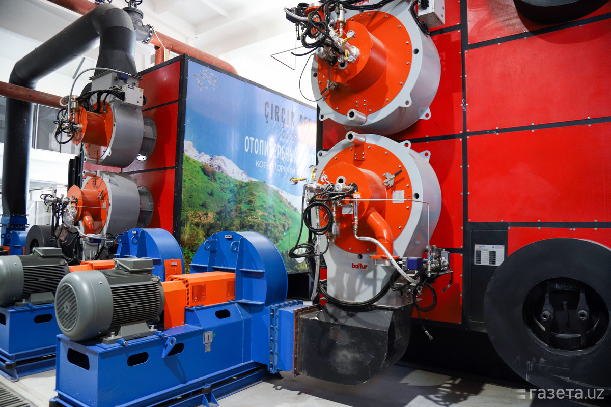
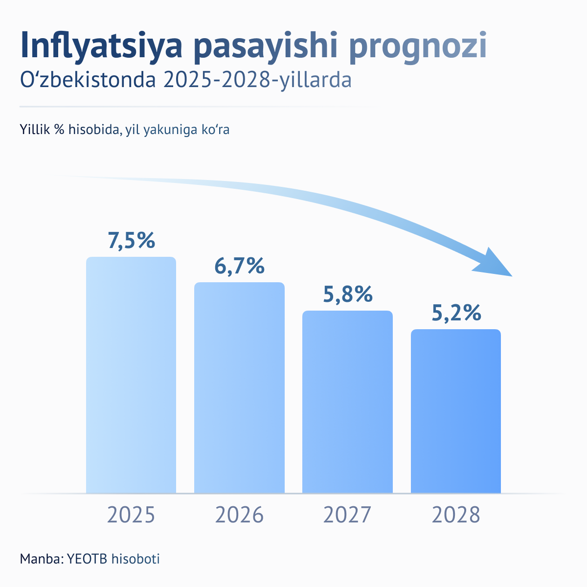
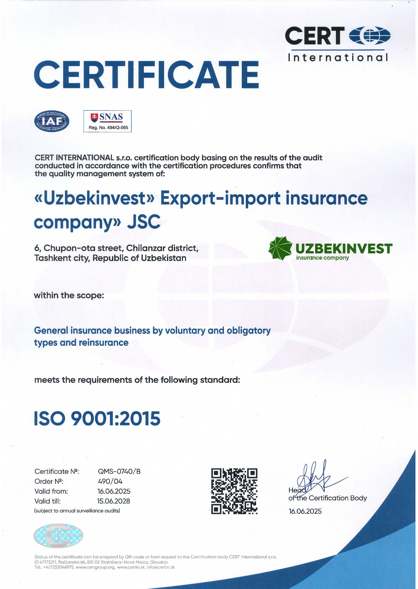

Rekord darajadagi energiya iste’moli:
Yanvar oyidagi sovuq kunlarda elektr energiyasi iste’moli tarixiy maksimal darajaga (sutkasiga 283-300 mln kVt/soat) yetdi.
2026-yil 20-fevral
Inflyatsiya va Narx-navo
inflyatsiya 7.2% gacha pasaygan bo‘lsa-da, aholi va tadbirkorlar orasida "kutilayotgan inflyatsiya" baribir yuqori (10-12%) darajada qolmoqda. Ayniqsa, oziq-ovqat va xizmat ko‘rsatish sohasidagi narxlarning beqarorligi iqtisodiy faollikka salbiy ta’sir qilmoqda.
2026-yil 20-fevral
Logistika xarajatlari:
Tashqi savdoda logistika zanjirlarining qimmatligi va geosiyosiy vaziyat sababli eksport-import xarajatlari yuqoriligicha qolmoqda.
2026-yil 13-fevralQishloq xo‘jaligida suv taqchilligi muammosi kritik nuqtaga yetgan.
2026-yilda suv tejovchi texnologiyalarga o‘tish iqtisodiy majburiyatga aylandi. Agar bu muammo hal etilmasa, oziq-ovqat xavfsizligi va eksport salohiyati pasayishi mumkin.
2026-yil 13-fevral
Sanoat ishlab chiqarishi keskin oshgani sababli, mavjud transport infratuzilmasi yuklarni tashishga ulgurmayapti.
Sayyohlar oqimi va savdo hajmi oshishi natijasida yo‘lovchi tashish quvvatini ikki baravar oshirish ehtiyoji tug‘ilgan.
2026-yil 13-fevral
Gaz qazib olishning pasayishi va yangi konlar
Mavjud gaz konlarining 85 foizida bosim tushib ketgan va resurslar kamaygan. Bu sanoat korxonalarining barqaror ishlashiga xavf tug‘dirmoqda.
2026-yil 13-fevralKommunal boshqaruv inqirozi
Yangi qurilgan ko‘p qavatli uylar soni ko‘paygan, biroq ularni boshqarish va servis xizmati oqsamoqda.Faqat uy qurish kifoya emasligi ma’lum bo‘lib qoldi. 2026-yilda uy-joy mulkdorlari shirkatlari va boshqaruv kompaniyalarida professional kadrlar yetishmasligi asosiy muammoga aylandi.
2026-yil 13-fevral2026-yil fevralidagi tahlillarga ko‘ra, sug‘orish tizimlarining eskirganligi sababli suvning katta qismi dalaga yetib bormasdan bug‘lanib yoki yerga singib ketmoqda.
2028-yilga borib suv tanqisligi yiliga 5-12 kub kilometrga yetishi prognoz qilinmoqda.
2026-yil 13-fevral
Turar joy qurilishlaridagi qonunbuzarchiliklar
24 671 ta ko‘p kvartirali uy-joyning texnik holati o‘rganilib, 7 mingga yaqin qonunbuzilish holati aniqlangan. Qayd etilishicha, kamchiliklarni bartaraf etish bo‘yicha tegishli choralar ko‘rilib, ma’muriy jarimalar qo‘llangan hamda sudlarga da’vo arizalari kiritilgan.
2026-yil 13-fevralDavlat nazoratidan bozor nazoratigacha:
O'zbekistonda sanoatni tartibga solish tizimi "davlat nazorati"dan "bozor nazorati"ga o'tish bosqichiga kirdi.
2026-yil 13-fevralTug'ilish kam, ajrimlar ortmoqda
Yil boshida O'zbekiston axolisi 38 mln 236 ming kishiga yetdi, ammo demografik ko'rsatkichlarda salbiy o'zgarishlar kuzatildi.
2026-yil 13-fevral
O'zbekistonda kredit foizlari dunyodagi eng yuqorilardan biri bo'lib qolmoqda
2026 yilga kelib kreditlarning o'rtacha stavkasi bo'yicha O'zbekistondan faqat sanoqli davlatlar oldinda. Real foiz stavkalari o'sgani sari axoli ko'proq kredit olmoqda.
2026-yil 13-fevralO'zbekistonda sun'iy intellekt yaqin 5 yilda qaysi kasblarni siqib chiqaradi?
Sun'iy intellekt rivoji tufayli yaqin besh yil ichida past malakali va kundalik takrorlanuvchi kasblar qisqarishi mumkin.
2026-yil 13-fevral
O'zbekistonda yana metan "заправка" lar faoliyati cheklandi: sovuq sabab
Sovuq ob-havo va gazga talab oshgani tufayli O'zbekistonda metan zapravkalari faoliyati yana vaqtincha cheklandi.
2026-yil 13-fevral
Samarqand shahrida issiqlik tizimi yangilanmoqda va bu axolining noroziligiga sabab bo'lmoqda
11 mingdan ortiq xonadonlarni o'z ichiga olgan yangilanadigan issiqlik tizimi loyihasi aholiga vaqtincha noqulayliklar tug'dirmoqda.
2026-yil 13-fevral
O'zbekistonda byudjet taqchilligi pensiya yoshini oshirilishiga sabab bo'lishi mumkin.
O'zbekistonda 32 yildan buyon pensiya yoshi oshirilmagandi.
2026-yil 13-fevral
11 oyda 103 ming soliq huquqbuzarliklari: asosan chek berilmagan
Soliq qo'mitasiga kelib tushgan murojaatlarga ko'ra 93 141 holatda harid cheklari berilmaganligi qayd etilgan.
2026-yil 13-fevralO'zbekistonliklardan yana bir dorini iste'mol qilmaslik so'raldi
"Телсартан H" dori vositasini sotib olgan fuqarolardan ushbu dori vositasini iste’mol qilmaslik, agar mavjud bo'lsa undan foydalanmaslik so'raladi.
2026-yil 13-fevral
Yanvar oyida infyatsiya darajasi 0,7 foizga pasaydi
2026 yil yanvar oyida O'zbekistonda oylik inflyatsiya 0,7 foiz bo'lib, yillik ko'rsatkich 7,2 foizgacha tushdi.
2026-yil 13-fevral
O'zbekistonliklar 2025 yilda kredit olishni keskin ko'paytirdi
Yil davomida mamlakat axolisi 156,9 trln so'mlik kredit rasmiylashtirdi. Bu ko'rsatkich 2024 yilga nisbatan 49,9 foizga ko'proq bo'ldi.
2026-yil 13-fevral
669 ming so'mlik chegara: kambag'allikni o'lchashdagi xiralashgan manzara
Rasmiy statistikada kambag'allik pasayib borayotgani qayd etilsa-da, minimal iste'mol harajatlarining amaldagi darajasi real yashash harajatlari bilan sezilarli tafovut yuzaga keltirmoqda.
2026-yil 13-fevral
Tarmoqli marketingmi yo moliyaviy piramida: tuzoqni qanday ajratish mumkin?
“Risk yo‘q, 100 foizlik kafolat”, “uyda o‘tirib oson pul ishlash”, “chet el sayohatiga bepul yo‘llanma”. Ayni shu kabi shiorlar bilan qo‘shtirnoq ichidagi “investitsion” tashkilotlar millionlab insonlarni chuv tushirgan.
2026-yil 13-fevralKiber-zaiflik :
Raqamli infratuzilmaning (bank tizimlari, elektr tarmoqlari) kiberhujumlarga nisbatan ochiqligi eng katta xavf sifatida ko‘rilmoqda.
2026-yil 13-fevralKritik minerallar taqchilligi:
Elektromobillar va yashil texnologiyalar uchun zarur bo‘lgan litiy, kobalt kabi minerallarni yetkazib berish infratuzilmasi talabga dosh berolmayapti.
2026-yil 13-fevral
Standardlashtirish va Sertifikatlashtirish infratuzilmasi
Eksport haqida ko‘p gapiriladi, lekin mahsulotni xalqaro standartlarga mosligini tekshiradigan laboratoriyalar yetarli emas.Mahalliy tadbirkor o‘z mahsulotini Yevropa yoki AQShga sotish uchun sertifikatni chet eldan olishga majbur.
2026-yil 13-fevral